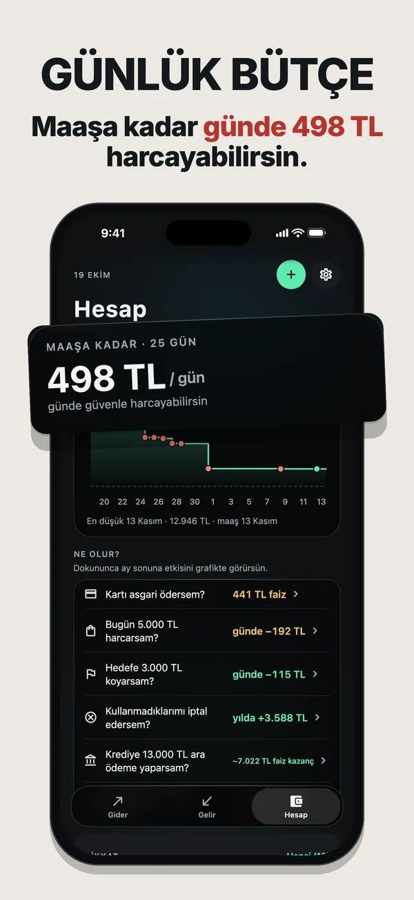

Maaştan günlük harcama limiti nasıl hesaplanır
Maaşa kadar günde ne harcayabileceğini bulmak için dört adım yeter: elindeki parayı yaz, maaşa kadar çıkacak ödemeleri çıkar, kalan günü say, böl. Formül, örnek hesap ve tablo formülü aşağıda.
Son güncelleme: 15 Kasım 2026
Formül
Günlük limit, maaşa kadar elinde güvenle kalan paranın kalan güne bölünmesidir:
Günlük limit = (elindeki para − maaşa kadar çıkacak sabit ödemeler) ÷ maaşa kalan gün
- Elindeki parayı yaz. Bugün harcayabileceğin bakiye: vadesiz hesap, nakit.
- Maaşa kadar çıkacak sabit ödemeleri çıkar. Kira, faturalar, abonelik yenilemeleri, taksitler, kartın son ödemesi ya da asgarisi.
- Kalan günü say. Bugünden maaşın yatacağı güne kadar kaç gün var?
- Böl. Çıkan rakam, her gün harcayabileceğin tutardır.
Örnek hesap
Rakamlar örnektir. Maaşa 12 gün var, hesapta 18.000 TL duruyor:
| Kalem | Tutar |
|---|---|
| Hesaptaki para | 18.000 TL |
| Kira | −7.500 TL |
| Faturalar | −1.200 TL |
| Abonelik yenilemeleri | −600 TL |
| Taksit | −1.500 TL |
| Kalan | 7.200 TL |
| Günlük limit (7.200 ÷ 12) | 600 TL |
Bu bir hesaplama yöntemidir; finansal tavsiye değildir. Rakamları kendi durumuna göre değiştir.
Tabloda yapmak istersen
Elektronik tabloda B1 hücresine parayı, B2'den B5'e sabit ödemeleri, B6'ya kalan günü yaz:
=(B1-TOPLA(B2:B5))/B6 (İngilizce sürümde =(B1-SUM(B2:B5))/B6)
Her harcamadan sonra B1'i güncellemen gerekir; tablo bunun dışında kendini yenilemez.
Sık yapılan hatalar
- Abonelik ve taksitleri unutmak. Küçük yenilemeler toplanınca günlük limiti belirgin düşürür.
- Maaş gününü yanlış saymak. Maaş hafta sonuna denk geliyorsa paranın hesaba hangi gün geçtiğine göre say.
- Limiti her gün aynı sanmak. Bir gün fazla harcarsan kalan günlerin payı düşer; limiti yeniden hesapla.
- Birikimi hesaba katmamak. Ayırmak istediğin tutarı sabit ödemeler gibi önce çıkar.
Subsi'de nasıl görünür
Maaşını ve bakiyeni girince Hesap sekmesindeki Maaşa kadar kartı bu hesabı kendisi yapar: maaşa kaç gün kaldığını, günde güvenle ne harcayabileceğini ve basamaklı tahmin çizgisini gösterir. Eklediğin her harcama rakamı günceller.
Ne olur? bölümünde harcamadan önce sorabilirsin: kartı asgari ödersem, 5.000 TL harcarsam, hedefe 3.000 TL koyarsam? Etkisi ay sonuna kadar grafikte görünür. Kategori bütçeleri aşmadan önce uyarır.
Subsi bankana bağlanmaz: harcamaları elle, ekran görüntüsünden ya da PDF'ten eklersin, okuma telefonda yapılır. Hesap ve giriş yok, her şey telefonunda kalır.

Subsi iPhone, iPad ve Android'de. Tek seferlik satın alma; abonelik, reklam ve uygulama içi satın alma yok.
Sık sorulanlar
Maaş günüm ayın farklı günlerinde olursa?
Formül aynı kalır; yalnız "maaşa kalan gün" her ay değişir. Subsi maaş gününü kendisi sayar.
Birikim ayırmak istersem?
Ayırmak istediğin tutarı sabit ödemeler gibi önce çıkar, kalanı güne böl.
Limiti aşarsam ne olur?
Ertesi günlerin payı düşer. Subsi her harcamada günlük rakamı yeniden hesaplar, Ne olur? bölümü etkisini önceden gösterir.
Subsi bankama bağlanıyor mu?
Hayır. Harcamaları sen eklersin; hesap, giriş ve sunucu yok.
İlgili: Subsi, abonelik takip uygulaması · iPhone'da aboneliklerini nasıl görürsün · Gizlilik eki